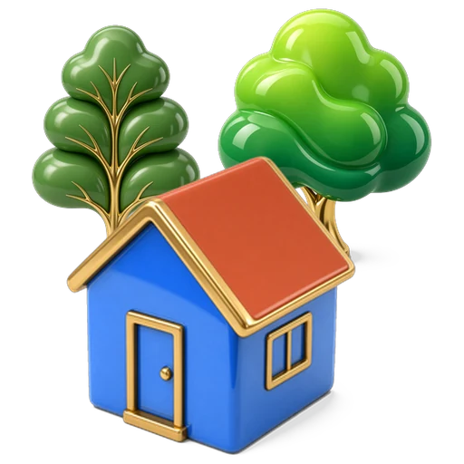

Mosaico Vila
A turma é uma vila; os grupos, famílias. Casas, bem público, uma mata que se regenera e uma regra de mercado que a turma pode trocar.

 Participar
Participar
Digite o código que aparece no telão.
A sala real entra com o Firebase.
 Conduzir
Conduzir Como é uma partida
Como é uma partida
Cinco anos e fechamento, cerca de 47 a 49 minutos. Uma novidade por ano, com exemplo resolvido no telão e pergunta rápida no celular. No caminho, algumas propostas que mudam de partida para partida.

Ano 1Renda e bem público
Ano 2A mata comum
Ano 3Moradia e aluguel

VotaçãoMonopólio ou Prosperidade
Ano 4Mercado de lotes
Ano 5O último ano
Prof. Mário César Nascimento, PhD